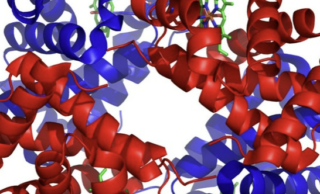

3대영양소

생명 유지에 필수적인 영양소로서 효소, 호르몬, 항체 등의
주요 생체 기능을 수행하고 근육 등의 체조직을 구성
생물체 내에서 단백질은 만능이라 해도 좋을 정도로 다양하게 쓰인다.
생물체 내에서 일어나는 복잡한 화학반응을 일으키는 효소들은 대부분 단백질이다.
근육과 같이 몸을 구성하는 역할도 한다. 뿐만 아니라 면역에 중요한 항체도 단백질로 이루어졌으며,
DNA 사슬을 감아 뭉치고 2차적 유전정보를 저장하는 히스톤도 단백질이고, 연골, 피부, 가죽, 털, 비늘 등을
이루는 주성분 콜라겐과 케라틴도 단백질이다. 거기다 몇몇 호르몬까지도 단백질이다.
즉, 생물의 기본적인 DNA 복제서부터 생물의 외형 형성에 이르기까지 생명의 정수이자 필수 요소,
생명체의 거의 모든 것으로 작용하는 물질. 생명 현상의 정수라고까지 일컬어지는 센트럴 도그마가 단백질의 합성 과정이라는
부분에서부터 얼마나 중요한지 알 수 있는 물질.

인간 게놈 프로젝트가 완료되었음에도 기대 만큼의 성과가 나오지 않고 있는 것은 선택적 이어맞추기(alternative splicing)에 의해
유전체(genome)의 정보에 비해 만들 수 있는 단백질의 종류가 정비례하지 않기 때문이다. 또한 단백질 거대분자의 복잡한 구조(꼬임) 때문에
유전정보만 가지고 단백질의 기능을 유추하는 것이 거의 불가능하다. 단지 아미노산의 배열순서만 알아서는 실제 결과물인 단백질 분자가
어떤 3차원적 형태를 갖는지 알 수 없는데, 이 형태야말로 단백질 분자(효소)의 기능을 좌우하는 중요 요소이기 때문이다.
때문에 관련 학문이 갖는 비중이 유전자 서열만 붙들고 파던 유전체학(genomics)에서 단백질 분자의 형태를 연구하는 단백질체학(proteomics)으로
옮겨가고 있다.기본적으로 이황화 결합(-S-S-; Disulfide Bond)이 많을수록, 그로 순환(Cyclic)할수록 체내에서 안정한 것으로 알려져 있다.